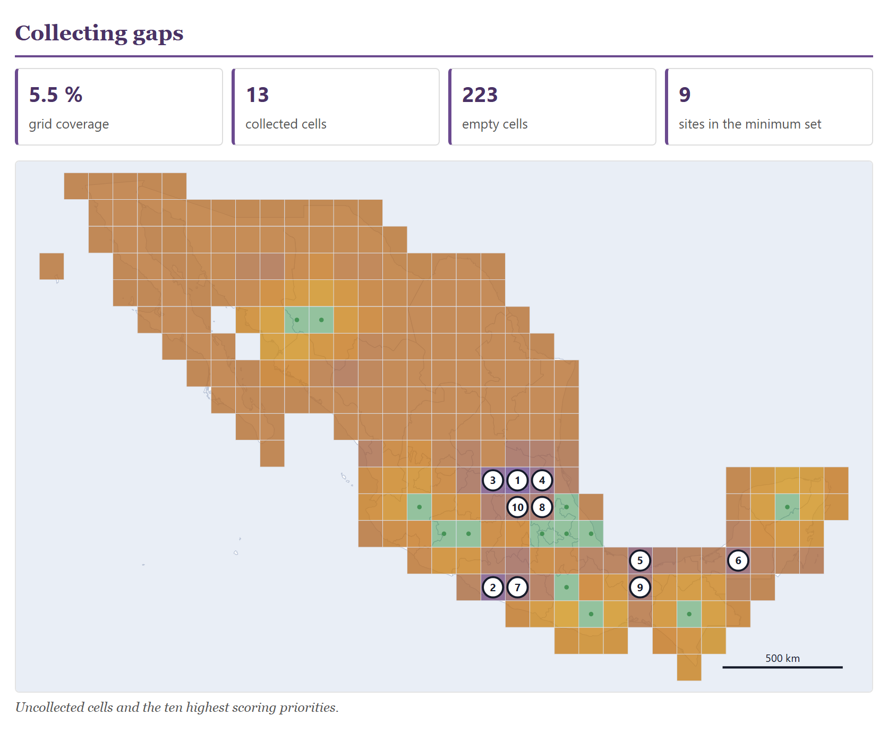

Report
The last block computes nothing of its own: it gathers what Blocks 2 to 8 compute into a document that stands on its own, with its numbers, its figures, the methods written out in prose and only the references of the methods that were used, each one cited in the text. The preview is the file itself: what you see is what is printed and what is downloaded. It also packs everything into a ZIP —the report, the working tables and each figure in SVG— and exports the passport in the two formats used to share germplasm: MCPD, the one genebanks use with one another, and Darwin Core, the one used by GBIF. This chapter explains each control, what each section of the report on the example collection says, which block each number comes from and what you have to check before signing.
- 10.1What the report gathers
- 10.2Title, signature and language
- 10.3The sections and the figures
- 10.4The summary and the collection
- 10.5Data quality
- 10.6Geographic distribution
- 10.7Diversity and collecting gaps
- 10.8Characterization, core and management
- 10.9The written methods and the references
- 10.10Printing and downloading the report
- 10.11The ZIP package
- 10.12The passport in Darwin Core and in MCPD
10.1What the report gathers
The block has two sections: 1 · What goes into the report, with the header data, the section buttons and the five output buttons, and 2 · The report, as it comes out, with the preview. The preview is not an approximate drawing: it is the same HTML document you download, placed in a frame on the page. If there are no accessions, the block says Load your accessions in Block 2 first.
![The title Block 10 · The report, the introductory paragraph, which says that data quality, the map, diversity, gaps and management are computed right there and that characterization and the core are the only thing that can be missing, and section 1 · What goes into the report: the fields Title with Annual report 2026, Genebank or institution with Example Genebank, Signed by empty and the Report language selector set to the app's; twelve buttons switched on: Summary, The collection, Data quality, Geographic distribution, Geographic diversity, Collecting gaps, Characterization and core, Genebank management, Methods, References, Annex: the accessions and figures; and the buttons Print or save as PDF, Download the report (HTML), Download everything (ZIP), Passport in Darwin Core and Passport in MCPD](../img/en/b10-controles.png)
Every time you enter the block, the app runs again the analyses of Blocks 3 to 8 with whatever settings they have at that moment and builds the document; meanwhile, it shows its waiting window with the text Building the report. You do not need to have visited those blocks: if you never opened them, they come in with their default values. So, if you change a setting in another block —the grid size, the duplicate threshold, the core size— and come back here, the report already reflects it. The only thing that can be missing is the characterization and the core, which need the characterization data of Block 7; and the map, which only appears if there are coordinates.
| Section | Comes from | When it appears |
|---|---|---|
| Summary | Blocks 2, 3, 6 and 8 | Always; its button cannot be switched off. |
| The collection | Block 2 | Always; its button cannot be switched off. |
| Data quality | Blocks 2 and 3 | Always, unless you switch it off. The review is computed right here, with the duplicate threshold and the dismissed pairs you left in Block 3. |
| Geographic distribution | Block 4 | When there are accessions with coordinates. |
| Geographic diversity | Block 5 | With the units and the kind of diversity set in Block 5. |
| Collecting gaps | Block 6 | With the territory, the grid and the weights of Block 6. |
| Characterization and core | Block 7 | Only if you loaded a characterization in Block 7. Otherwise, the button is grey. |
| Genebank management | Block 8 | With the facilities configuration and the constants of Block 8. |
| Methods | all | Always; one paragraph per analysis present. Its button cannot be switched off. |
| References | all | Always; only those cited in the methods. Its button cannot be switched off. |
| Annex: the accessions | Block 2 | Always, unless you switch it off. |
Block 9 contributes nothing to the report: its labels and worksheets are printed there.
All the numbers in this chapter come from the example collection of Block 2 (button Open the example collection), with the example characterization of Block 7 and its default 10% core, and with the other blocks at their default values. The date of the report is that of the day it is built; here, 31 October 2026.
10.2Title, signature and language
The three fields at the top fill in the header of the document. The app remembers them from one session to the next.
| Control | What it does |
|---|---|
| Title | The large title of the report and the name of the browser tab when the file is opened. If empty, the report is called Collection report (in Spanish, Informe de la colección). |
| Genebank or institution | Appears in the grey line below the title. |
| Signed by | Also in that line, after the genebank. Write the name of the person responsible for the collection. |
| Report language | the app's (default), español or English. It changes the whole document —titles, tables, texts, methods, references and the labels inside the figures— without changing the language of the app. |
The header line joins what you wrote with the date and the number of accessions, separated by middle dots. With the example it says Example Genebank · 31 October 2026 · 46 accessions; in Spanish the date comes out as 31 de octubre de 2026. While you type in the three fields, the preview is rebuilt without running the analyses again and the cursor stays in place.
With English, the figures are drawn in English —the accumulation curve says “accessions examined” and “expected types”, the principal coordinates plot “axis 1” and “axis 2”— and so are the separate figures of the ZIP package. The references change their “y” into “and” and FAO’s city into “Rome”. Texts that come from your data (names, sites, remarks) stay as you wrote them.
10.3The sections and the figures
Below the fields there is one button per section, in the order they appear in the document, and at the end the figures button. When it is switched on (with a coloured background), the section goes in; a click switches it off and the preview is rebuilt. By default all of them go in. Four buttons cannot be switched off: Summary, The collection, Methods and References; when you hover over them they say this section is always in the report. A grey button is a section without data: with the example collection this only happens to Characterization and core, until you load the characterization in Block 7. For screen-reader users, each button announces whether it is on or off.
What is useful is to remove the sections that are not relevant: for the annual report to management, perhaps the summary, the collection, management and the annex are enough; for a paper on diversity, switch off management and the annex. When you switch off an analysis section, its methods paragraph and its references do not disappear: the methods are written with everything that was computed, whether its section is included or not (Section 10.9).
The figures button removes or restores the report’s five figures: the collecting map, the accumulation curve, the gap map, the principal coordinates and the workload. Switching it off makes the file lighter; the sections keep their boxes, their tables and their notes, and the ZIP package also comes out without the figures folder (Section 10.11). Switching a section or the figures on or off, or changing the language, runs the analyses again and takes a moment.
10.4The summary and the collection
The document begins with the title, the header line and the summary: six boxes with the basic passport numbers and, below, a list of findings, each one counted with its number and in singular or plural as needed.
![The header of the report, Annual report 2026, with the line Example Genebank · 31 October 2026 · 46 accessions; the Summary section with six boxes: 46 accessions, 24 taxa, 8 countries of origin, 6 conservation routes, 45 with coordinates and 20 with a safety duplicate; and six findings: 1 coordinate disagrees with the declared country, and comes with a proposed fix; 2 accession pairs are similar enough to be reviewed as duplicates; 1 accession has no coordinates, so it is absent from the maps and from the gap analysis; 21 accessions conserved ex situ have no safety duplicate in another institution (in-situ and on-farm ones are not expected to); 10 lots have at least one critical management alert; Collecting covers 5.5 % of the cells of the analysed territory](../img/en/b10-resumen.png)
| Box | Ex. | What it counts |
|---|---|---|
| accessions | 46 | The records of the passport. |
| taxa | 24 | The distinct combinations of genus and species (GENUS + SPECIES), without the subspecies. |
| countries of origin | 8 | The distinct values of ORIGCTY, as written: the “MX” of the tepary bean, one of the planted errors (Section 3.4), counts as one more country. |
| conservation routes | 6 | The routes with at least one accession, declared in GP_CONS or deduced from STORAGE; “Not declared” is not counted. |
| with coordinates | 45 | Those with numeric latitude and longitude. |
| with a safety duplicate | 20 | Those with a safety duplicate in another institution (DUPLSITE different from INSTCODE). |
The findings only appear when there is something to count: coordinates that disagree with the country and come with a proposed fix, coordinates with a clear error that the app cannot fix (on a separate line), candidate duplicate pairs, accessions without coordinates, ex-situ accessions without a safety duplicate, lots with a critical alert (from Block 8) and the grid coverage (from Block 6). With the example there are six. The safety-duplicate finding counts 21 and not 26 (the 46 minus the 20 that do have one) because the 2 in-situ populations and the 3 on-farm plots are not expected to have a duplicate in a cold store; it is the same number as in Block 8.
The section The collection describes the passport in four tables: the ten taxa with the most accessions, the ten countries of origin with the most accessions, how many accessions there are per conservation route and with what percentage, and the eight worst-filled mandatory or recommended descriptors.
![The section The collection: the table Best represented taxa with Zea mays 18, Capsicum annuum 3, Sechium edule 3, Phaseolus vulgaris 2 and six taxa with 1; the table Countries of origin with Mexico 37, Guatemala 2, Peru 2, Bolivia, Ethiopia, India, Colombia and MX with 1; the table How it is conserved with Seed bank 28 (60.9 %), Field genebank or living collection 8 (17.4), In vitro culture 3 (6.5), On-farm conservation 3 (6.5), Genetic reserve (in situ) 2 (4.3), Cryopreservation 1 (2.2) and Not declared 1 (2.2); and the table Worst filled mandatory or recommended descriptors with Acquisition date 41 (89 %), Type of germplasm storage 41 (89), Latitude (decimal), Longitude (decimal) and Elevation (m) 45 (98) and Holding institute code, Accession number and Genus 46 (100)](../img/en/b10-coleccion.png)
The routes table adds up to the 46 accessions and 100%: the chile costeño (MEX-CH-0042), which declares neither route nor storage, goes in the Not declared row; in the annex it appears with a dash in the route column. The descriptors table serves as a to-do list for Block 2: here, five accessions without an acquisition date (ACQDATE) and five without a storage type (STORAGE). If all descriptors are complete, the table shows the first eight with 100%.
The report gives three different counts of species diversity, and all three are correct: 24 taxa in the summary, which are all the species of the passport; 18 types in total in geographic diversity, which are the species of the accessions that fall inside a Mexican state, because the default units of Block 5 are the states; and 20 types with a single accession among the risks of the gap analysis, which Block 6 counts over the whole collection. When you quote a number, say which set it comes from.
10.5Data quality
The section sums up the Block 3 review in six boxes, shows the ten candidate duplicate pairs with the highest scores and closes with a note: a high-scoring pair is not a proven duplicate, and merging is done by hand in Block 3.
![The Data quality section with six boxes: 1 coordinate with a clear error, 0 suspicious coordinates, 0 consistency warnings, 4 proposed fixes, 2 candidate duplicate pairs and 29 passport warnings; the table Highest scoring pairs with MEX-ZM-0002 + MEX-ZM-0045, score 100, 6.2 km, the same taxon, the same collecting number (LAB-2019-101), nearly identical names (100%), 6.2 km apart, the same collecting date, the same collecting mission; and MEX-SE-0029 + MEX-SE-0046, 100, 2.0 km; below, the note on high-scoring pairs](../img/en/b10-calidad.png)
| Box | Ex. | Where it comes from |
|---|---|---|
| coordinates with a clear error | 1 | Those that do not fall in the declared country and have a diagnosis: here, MEX-ZM-0039, with the unsigned longitude (Section 3.2). It is the Location problems of Block 3. |
| suspicious coordinates | 0 | The doubtful ones: latitude equal to longitude, round values, outside the country without a diagnosis. |
| consistency warnings | 0 | Names written in several ways and inconsistent catalogues. |
| proposed fixes | 4 | Those of Block 3: the sign of the longitude, “MX” for “MEX”, “BOLITA AMARILLO” in capitals and the extra spaces of the chayote. |
| candidate duplicate pairs | 2 | The pairs above the Block 3 threshold, minus those you dismissed. |
| passport warnings | 29 | The problems of the Block 2 validation (Section 2.6). |
The coordinate with a clear error is the same as in the first finding of the summary. If you apply the fix in Block 3, the box drops to 0, the finding disappears and the point of MEX-ZM-0039 returns to Veracruz on the map.
The pairs table shows the numbers of the two accessions, the rounded score, the distance between the collecting points and the reasons for the similarity, in the same words as Block 3. With the two pairs planted in the example collection —the Bolita amarillo maize and the chayote verde liso, each entered twice— the table has two rows, both with a score of 100. If you merge the pairs in Block 3, they disappear from the report.
10.6Geographic distribution
The section shows the Block 4 collecting map with the framing set in that block (with the example, the whole world, because there are accessions from other continents) and its legend, and below it two tables: the twelve Mexican states and the twelve countries with the most accessions, counted by the coordinate, not by the text of the passport.
![The Geographic distribution section: the world map with the collecting points concentrated in Mexico, Guatemala, Colombia, Peru and Bolivia and one in Ethiopia, one in India and one in Myanmar, with the north arrow and a scale bar of 5,000 km at 7° N; the legend Conservation route with Seed bank (27), Field genebank or living collection (8), In vitro culture (3), On-farm conservation (3), Genetic reserve (in situ) (2), Cryopreservation (1) and Not declared (1); the caption Collecting sites of the 45 georeferenced accessions; the table By Mexican state with Oaxaca 7, Puebla 7, Veracruz 6, Chiapas 4, Michoacán 3, Chihuahua, Yucatán, México and Jalisco 2 and Sonora 1; the table By country with Mexico 36, Guatemala 2, Peru 2 and Bolivia, Ethiopia, India, Colombia and Myanmar 1; and the note 9 of the points fall outside Mexico](../img/en/b10-mapa.png)
The points are coloured by conservation route, as in Block 4, and the legend says how many points there are of each: 27 from the seed bank (the seed accession without coordinates does not count), 8 from the field genebank, 3 in vitro, 3 on farm, 2 in situ, 1 cryopreserved and 1 not declared; in total, the 45 of the caption.
Here the difference between what is declared and what is measured shows: the section The collection counts 37 accessions from Mexico by ORIGCTY, and this one, 36 points inside Mexico, because the tuxpeño de la costa (MEX-ZM-0039), which claims to be from Mexico, has the unsigned longitude and falls in Myanmar. The tepary bean, declared as “MX”, does fall in Sonora. The note below says how many points fall outside Mexico: 9 of the points fall outside Mexico, so they only appear in the country count. The states that add up to 36 are the ten in the table; with more than twelve, the rest are not shown.
10.7Diversity and collecting gaps
The section Geographic diversity takes the Block 5 analysis: five boxes with the whole collection, a table with the twelve richest units, the accumulation curve with its estimators, a note when Chao1 is not reliable and the Mantel test in one sentence.
![The Geographic diversity section with five boxes: 18 types in total, 2.34 Shannon of the whole, 5.67 Whittaker's beta, 116 estimated types (Chao1) and 61.1 % sampling coverage; the table with Unit, N, Richness, Shannon, Pielou and Exclusive for Puebla 7, 5, 1.48, 0.92, 4; Veracruz 6, 4, 1.24, 0.90, 4; Chiapas 4, 4, 1.39, 1.00, 3; Oaxaca 7, 3, 0.80, 0.72, 0; Michoacán 3, 3, 1.10, 1.00, 1; Yucatán 0; México 1; Jalisco 1; Chihuahua 0 and Sonora 1; the accumulation curve up to 36 accessions with the lines Chao2 119, Chao1 116, Jackknife 2 43 and Jackknife 1 32; the note on Chao1 and the sentence Mantel test between composition and geographic distance: r = -0.422, p = 0.123 with 999 permutations over 9 units](../img/en/b10-diversidad.png)
The boxes are those of Block 5 (Chapter 5): 18 species in the 36 accessions that fall in a state, a Shannon of 2.34 for the whole, a Whittaker beta of 5.67 and a Good-Turing coverage of 61.1%. The Chao1 of 116 types, six times what was observed, comes with the note The Chao1 estimator leans on the number of types seen twice, and here there are very few: treat it as a rough bound and give more weight to Chao2 and the jackknife. With 36 accessions, no estimate of total richness is firm; the curve, which keeps rising, says the same without numbers.
The Exclusive column counts the species that are found only in that unit, what would be lost if the unit were lost: 4 in Puebla, 4 in Veracruz, 3 in Chiapas and 1 in Michoacán, the State of Mexico, Jalisco and Sonora. Oaxaca, with 7 accessions, has none: its three species are also found in other states.
The section Collecting gaps takes the Block 6 analysis (Chapter 6): four boxes —grid coverage, collected cells, empty cells and sites in the minimum set—, the map of cells with the ten priorities numbered, the table of those ten priorities, the table of types at risk and a note recalling that the analysis is geographic and compositional, not ecogeographic.

The priorities table gives, for each cell, its centre, the state, the distance to the nearest collected point and the score: the first is the cell at 21.50, −99.50 in San Luis Potosí, 228 km from the nearest collection, with 86.9 points; the tenth, the one at 20.50, −99.50 in Hidalgo, with 70.0. The risks table counts how many types have each Block 6 signal: 20 with a single accession, 14 with no safety duplicate, 6 only in a field collection, 1 only in situ, no ex-situ backup and 1 all from one state or country. The same type can have several signals, so the column does not add up.
10.8Characterization, core and management
The section Characterization and core collection only appears if you loaded a characterization in Block 7. It carries four boxes, the principal coordinates plot with its legend, the table of the four validation indicators of the core with what each one says, and a note when the core has fewer than ten accessions.
![The Characterization and core collection section with four boxes: 46 characterized accessions, 12 descriptors, 5 accessions in the core and 0.14 mean silhouette; the principal coordinates plot with points coloured by group and five large outlined points; the legend on one line: G1, G2, G3, G4 and large outlined symbol = in the core; the caption Principal coordinates on Gower distance; colour shows the cluster and the large outlined symbol marks the core accessions; the table MD% 0.0, VD% 62.5, CR% 75.2, VR% 91.4 and the note The core has fewer than ten accessions](../img/en/b10-nucleo.png)
The numbers are those of Block 7 (Chapter 7): 46 accessions characterized with 12 descriptors, 4 groups with a mean silhouette of 0.14, and a core of 5 accessions —MEX-AG-0024, MEX-TC-0027, MEX-CU-0040, MEX-CH-0042 and MEX-ZM-0043—, 10.9% of those characterized. In the plot, the colour is the cluster and the large outlined symbol marks the core accessions. The validation gives MD% = 0.0, VD% = 62.5, CR% = 75.2 and VR% = 91.4, and since the core has fewer than ten accessions, the report adds: The core has fewer than ten accessions: the validating t and F tests lack power and their percentages should be read with caution.
The section Genebank management takes the Block 8 dashboard (Chapter 8): four boxes, a table with one row per alert type and how many lots have it, the workload chart for the next 25 years and a note: a viability projection does not replace a germination test.
![The Genebank management section with four boxes: 10 lots with a critical alert, 21 lots with a warning, 15 lots with projected viability and 14 lots without published constants; the Alert and Lots table with a red, ochre or blue dot: Last germination test below the threshold 4, In-vitro subculture overdue 3, Fewer field plants than the minimum 3, Field replanting overdue 2, No safety duplicate in another institution 21, Site visit overdue 5, No date for the last replanting 2, Stock close to the minimum 2, Cryovial check overdue 1 and No viability constants: not projected 14; the stacked bar chart of the workload from +0 to +25 with the axis at 0, 13 and 25 and peaks of about 25 tasks at +7 and +17; the legend germination tests, regenerations, field replantings and in-vitro subcultures; the caption and the note](../img/en/b10-manejo.png)
The boxes match the Block 8 dashboard: 10 lots in trouble, 21 that need attention and 15 maize lots with projected viability; the 14 lots without published constants are the 13 seed lots of the other species and the chile costeño, which declares no route.
| Alert | Lots | Severity |
|---|---|---|
| Last germination test below the threshold | 4 | critical |
| In-vitro subculture overdue | 3 | critical |
| Fewer field plants than the minimum | 3 | critical |
| Field replanting overdue | 2 | critical |
| No safety duplicate in another institution | 21 | warning |
| Site visit overdue | 5 | warning |
| No date for the last replanting | 2 | warning |
| Stock close to the minimum | 2 | warning |
| Cryovial check overdue | 1 | warning |
| No viability constants: not projected | 14 | information |
The names are generic: the report says what is happening and to how many lots, not the numbers of each one. To find out which are the 4 lots with germination below the threshold —the Balsas teosinte with 81%, the vaquita bean with 84%, the tepary bean with 79% and the maíz ancho de riego with 72%— look at the Block 8 table or at datos/plan-de-trabajo.csv in the package (Section 10.11). The workload chart carries its legend —germination tests, regenerations, field replantings and in-vitro subcultures— and an axis with 0, 13 and 25 tasks; the peaks in years +7 and +17 are the germination tests of 22 seed lots that fall due together.
At the end of the document comes the annex: one row per accession with its number, name, species (without subspecies), country of origin by its name, collecting site, conservation route and stock. A country code the app does not recognize, such as “MX”, comes out as it is. It is the list that is filed with the report; if you do not need it, switch off its button.
10.9The written methods and the references
The Methods section is the most useful thing the block has and the one that demands the most care. The app writes in prose one paragraph for each analysis present, with the numbers and the settings it took from each block, each method with its citation, ready to be pasted into the materials and methods section of a report or a paper. What was not computed does not appear.
![The beginning of the Methods section with three paragraphs: Passport data, which begins The collection was described with the FAO/Bioversity multi-crop passport descriptors MCPD v2.1 (Alercia et al., 2015), says 46 accessions were recorded and ends with the export in Darwin Core (Wieczorek et al., 2012); Quality control and duplicates, which mentions the bounding box of the country, Levenshtein distance, the blocking scheme, Jaro-Winkler (Winkler, 1990) and ends 2 candidate pairs were examined; and Cartography, about the Natural Earth outlines and the point-in-polygon assignment](../img/en/b10-metodos.png)
| Paragraph | What it says |
|---|---|
| Passport data | MCPD v2.1 with seven local fields (the route, the in-situ site, the keeper, the stock, the percentage and date of the last germination test and the date of the last regeneration); “46 accessions were recorded”; validation by descriptor and across fields; the export in Darwin Core. |
| Quality control and duplicates | The three coordinate mistakes, Levenshtein, the blocking scheme and Jaro-Winkler scoring; “2 candidate pairs were examined”. |
| Cartography | Natural Earth offline and point-in-polygon assignment. |
| Geographic diversity | The unit and type of Block 5 (“grouped by state”, “the diversity of species”), the indices, rarefaction, Chao1, Chao2, the jackknife, Good-Turing, Jaccard dissimilarity, UPGMA and the Mantel test “using 999 permutations”. |
| Collecting gaps | The “1° grid”, the four weights of the priority index (40, 25, 20 and 15), greedy complementarity and what the analysis is not. |
| Characterization and core collection | All the options of Block 7 (below). |
| Viability and management | The Ellis and Roberts equation with the store temperature (−18 °C) and seed moisture content (6%) of the genebank configuration, where the constants come from, the regeneration threshold (85%) and the interval between tests (10 years), and the number of plants needed to retain an allele. |
| Software | That everything was computed with GermplasmPro, version 1.0.0 (Barrera-Guzmán, 2026), in the browser and without sending any data. |
The characterization paragraph follows every setting of Block 7. With the default values it says, among other things:
“Hierarchical clustering used Ward’s method in its D2 variant (Murtagh and Legendre, 2014), and the tree was cut into 4 groups, a number chosen by hand; the mean silhouette of that cut was 0.14 (Rousseeuw, 1987). The core collection, in the sense of Brown (1989), was requested at 10 % of the characterized accessions (5 of 46) and ended up with 5. It was built by strata —the 4 clusters—, with logarithmic allocation of the size among strata, picking within each stratum the accessions most distinct from one another by Gower distance. Every stratum was represented.”
If in Block 7 you choose UPGMA, 3 groups and a 20% core, the paragraph changes to “used UPGMA, the unweighted pair-group average (Sokal and Michener, 1958)”, “cut into 3 groups”, “the mean silhouette of that cut was 0.27” and “requested at 20 % … (9 of 46) and ended up with 9”. It also says whether you required at least one accession per stratum, how many strata were left without a representative and, with the M method, that the core was built by maximizing classes (Schoen and Brown, 1993), without strata.
The app writes with what it knows; you sign. Read each paragraph before copying it, check that it says what you did and that every number matches the blocks, and adapt the style to that of your journal or your institution. Add what the app cannot know: where the passport and characterization data come from, who collected and with what permit, what conditions your cold store really has, why you chose each setting. If you cite a method, consult the original source: the app supplies the reference, but what the text claims about it, you claim. And if after downloading the report you change something in a block, the old text is out of date: go back into Block 10 and download it again.
The references are built from what is cited in the methods, in alphabetical order and numbered, in the language of the report. With the full example there are 24. Among them is that of the program itself, cited by the Software paragraph; without characterization, Brown, Gower, Hu et al., Murtagh and Legendre and Rousseeuw, cited only by that paragraph, disappear; and Darwin Core (Wieczorek et al., 2012) is always there, because the passport paragraph mentions the export.
![The References section with 24 references numbered in alphabetical order: Alercia et al. (2015), Barrera-Guzmán (2026) GermplasmPro version 1.0.0, Brown (1989), Burnham and Overton (1978), Chao (1984), Chao (1987), Ellis and Roberts (1980), FAO (2014), Good (1953), Gower (1971), Heck et al. (1975), Hu et al. (2000), Hurlbert (1971), Jaccard (1912), Jost (2006), Mantel (1967), Murtagh and Legendre (2014), Natural Earth, Ramírez-Villegas et al. (2010), Rousseeuw (1987), Royal Botanic Gardens Kew Seed Information Database, Sokal and Michener (1958), Wieczorek et al. (2012) and Winkler (1990)](../img/en/b10-referencias.png)
10.10Printing and downloading the report
The Print or save as PDF button opens the browser’s print dialogue with the report only, without the app around it. For a PDF, choose Save as PDF as the printer. If the browser does not allow printing the frame, the app opens the report in a new tab and prints it from there; if the browser also blocks new windows, it says The browser blocked the window; download the report and open it with a double click.
The Download the report (HTML) button saves the document as informe-2026-10-31.html (with the day’s date; the file name is the same whatever the language) and says Report downloaded. for four seconds. It is a single file of about 315 kB, with the figures inside, without fonts or external files: it opens with a double click in any browser, without internet, and can be printed from there, or opened in a word processor to edit it. The messages of the buttons are also announced to screen readers.
Printed to PDF on letter paper, with the default margins and without browser headers, the full report takes 13 sheets: the summary and the collection on the first two, quality, the map and diversity from the second to the fifth, the gaps on the fifth and sixth, characterization and management from the sixth to the eighth, the methods on the eighth and ninth, the references on the tenth and eleventh, and the annex of 46 accessions on the last three. The text is set in a serif face at 10.5 points and the tables in a sans-serif face, with the numbers aligned to the right.
When printing, titles and subtitles are not left alone at the foot of a sheet: they move to the next one with what they head. Figures are printed at 82% of the width and are not split; long tables are split between rows, and the table header is repeated on the next sheet. Accession numbers are not broken across two lines.
10.11The ZIP package
The Download everything (ZIP) button builds a package with the report, the working tables and the separate figures, and saves it as germplasmpro-2026-10-31.zip. While building it, it says Building the package… and when it finishes it counts the files: with the full example, 15 files in the package. The ZIP is written by the app itself, without outside libraries. The names of the files and folders inside are fixed and in Spanish, whatever the language of the report.
| File | What it is |
|---|---|
| informe.html | The report, identical to the preview: with the sections, the figures and the language you chose. |
| datos/pasaporte-mcpd.csv | The passport with the 42 MCPD v2.1 descriptors (Section 10.12). |
| datos/pasaporte-completo.csv | The 42 descriptors and the seven local GP_ fields: 49 columns. |
| datos/darwin-core.csv | The passport in Darwin Core (Section 10.12). |
| datos/calidad.csv | The same file as Download the quality report in Block 3 (informe-calidad.csv), produced by the same function: one row per finding, with tipo (type: geography, consistency, correction, duplicate or passport), nivel (level), accesion (accession), campo (field; for consistency findings, the name of the warning) and detalle (detail). Only if there are findings. |
| datos/plan-de-trabajo.csv | One row per alert of each Block 8 lot: accesion, taxon, ruta (route), nivel, alerta (alert) and detalle, with the numbers of each lot. Only if there are alerts. |
| figuras/*.svg | Eight SVG figures 900 pixels wide, in the language of the report and with the colours of the light theme: mapa-de-colecta (collecting map), curva-de-acumulacion (accumulation curve), mapa-de-diversidad (diversity map), vacios-de-colecta (collecting gaps), curva-de-complementariedad (complementarity curve), coordenadas-principales (principal coordinates), dendrograma (dendrogram) and carga-de-trabajo (workload). Only with the figures button on; those of Block 7, only with characterization. |
| LEEME.txt | What the package contains, the date and time it was generated, the number of accessions and of files, and the difference between the three passport formats. It is written in Spanish only. |
The package carries three figures that the report does not —the diversity map, the complementarity curve and the dendrogram—. Each separate figure is an SVG file in its own right, without the HTML legend or the caption of the report: write your own caption when you put it into another document. Since SVG is vector-based, it can be enlarged without losing sharpness and edited in any drawing program; if the journal asks for an image format, convert it with that program.
The package is a snapshot of the collection on a date: the passport as it stood, the tables behind every number in the report and the figures. Keep it with the signed report and the Block 9 register book (Section 9.9). To reopen the collection in the app, use pasaporte-completo.csv in Block 2: it is the only one of the three that keeps the route, the stock and the germination and regeneration data in their own columns.
10.12The passport in Darwin Core and in MCPD
The last two buttons export only the passport, without the report, as CSV with UTF-8 encoding and comma separator:
- Passport in MCPD saves pasaporte-mcpd-2026-10-31.csv with the 42 MCPD v2.1 descriptors, in the order of the standard and with its names (
PUID,INSTCODE,ACCENUMB…), and says 46 accessions in MCPD v2.1. It is the format for sending the list to another genebank or to a germplasm information system. TheGP_fields are left out. - Passport in Darwin Core saves darwin-core-2026-10-31.csv with 33 Darwin Core columns, the GBIF standard, and says 46 records in Darwin Core.
Nineteen MCPD descriptors have a term of their own in Darwin Core and are translated; the other thirty —among them SAMPSTAT, STORAGE, MLSSTAT, DUPLSITE and the seven GP_— travel in the dynamicProperties column as a JSON object, with their original name preceded by mcpd:. Between the translated columns and that one, the file keeps the complete passport.
| Darwin Core term | Comes from | MEX-ZM-0001 |
|---|---|---|
occurrenceID | INSTCODE:ACCENUMB | MEX006:MEX-ZM-0001 |
basisOfRecord | the route | LivingSpecimen (in situ and on farm: HumanObservation) |
collectionCode | fixed | germplasm |
recordedBy | COLLNAME | empty: the example does not include the name of the collector |
eventDate, year, month, day | COLLDATE | 2019-08-12 · 2019 · 8 · 12 |
scientificName | GENUS SPECIES SUBTAXA | Zea mays |
country, countryCode | ORIGCTY | Mexico · MX (two-letter ISO code) |
decimalLatitude, decimalLongitude, geodeticDatum | DECLATITUDE, DECLONGITUDE | 17.6871 · −97.2788 · EPSG:4326 |
minimum- and maximumElevationInMeters | ELEVATION | 1993 · 1993 |
samplingProtocol | COLLSRC | Farm store |
degreeOfEstablishment | SAMPSTAT from 300 to 599 | cultivated |
preparations | the route | Seed bank |
dynamicProperties | the remaining 30 | {"mcpd:ACCENAME":"Maíz azul de Apoala", "mcpd:SAMPSTAT":"300", "mcpd:STORAGE":"13;40", … "mcpd:GP_GERMPCT":"88", …} |
The texts of country, samplingProtocol, georeferenceProtocol and preparations come out in the language of the report: if you are going to upload the file to GBIF, set the report to English before exporting. recordedBy is the person who collected, and is only filled from COLLNAME; the code of the collecting institute travels in dynamicProperties. Wild material has no term in degreeOfEstablishment: it is left empty and the full SAMPSTAT code goes in dynamicProperties. If the country is miswritten in the passport, like the “MX” of the tepary bean, country and countryCode are left empty: fix the passport in Block 3 first.
When something goes wrong
| What you see | Why it happens and what to do |
|---|---|
| Load your accessions in Block 2 first. | There is no passport. Load your collection or the example one (Chapter 2). |
| The Characterization and core button is grey | No characterization is loaded. Load it in Block 7 (Chapter 7) and come back. |
| The Summary or the Methods cannot be switched off | They are among the four sections that always go into the report (Section 10.3). |
| The geographic distribution does not appear | No accession has coordinates. Fill them in in Block 2. |
| The summary says a coordinate disagrees with its country | Check it in Block 3 and apply the proposed fix, or explain in the text why you keep it. |
| I want the numbers of each lot with an alert | The report only counts lots by alert type. Look at the Block 8 table or at the work plan in the ZIP. |
| I changed a setting in another block and the downloaded report does not have it | The report is built when you enter the block. Go back to Block 10 and download again. |
| The browser blocked the window; download the report and open it with a double click. | The browser did not let the tab for printing open. Download the HTML and print it from there, or allow pop-up windows for the app. |
| The Darwin Core comes out with countries and protocols in Spanish | They come out in the language of the report. Choose English in Report language and export again. |
| The ZIP carries fewer than 15 files | There are no quality findings, or no alerts, or no characterization, or the figures are switched off: each removes its own files. |
| If the report goes to management or into the annual report | then keep the summary, the collection, management and the annex, and fill in the genebank and the signatory. |
| If it goes into a paper | then use the methods as a draft: check them against the blocks, consult the sources they cite and add what the app does not know. |
| If the summary reports coordinates that disagree or pairs to review | then resolve them in Block 3 before building the final report. |
| If you changed a setting in another block | then enter Block 10 again and download again. |
| If the report is to be in English | then choose English: text, figures, references and Darwin Core change together. |
| If you need the figures in another document | then download the ZIP and use the SVGs in figuras/, with your own caption. |
| If you are going to share the list with another genebank | then send the passport in MCPD. |
| If you are going to publish the data in GBIF | then use Darwin Core in English and check the empty countries. |
| If you are closing the year | then file the ZIP with the signed report and the Block 9 register book. |
This closes the ten blocks. The report says what the collection and the analyses say, but the interpretation, the sources and the signature are yours. What follows in the manual are the appendices: the files the app reads and writes, the decision rules gathered together, the glossary, what to do when something goes wrong, the references and the licence.